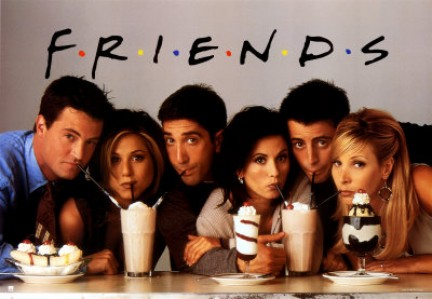
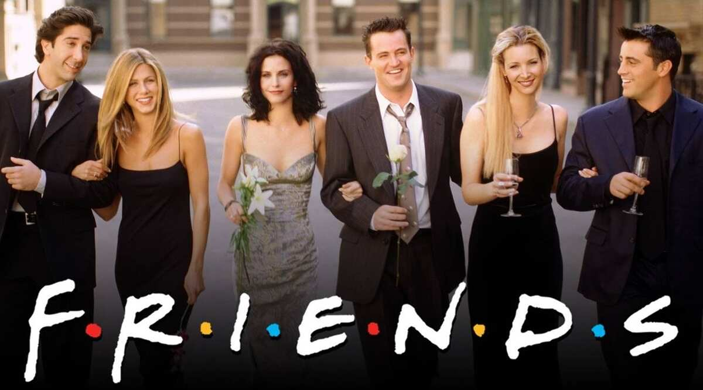
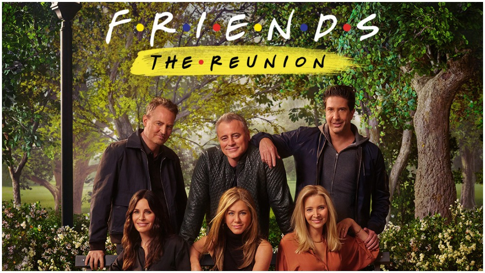

Friends is an American television sitcom created by David Crane and Marta Kauffman, which aired on NBC from September 22, 1994, to May 6, 2004, lasting ten seasons.[1] With an ensemble cast starring Jennifer Aniston, Courteney Cox, Lisa Kudrow, Matt LeBlanc, Matthew Perry and David Schwimmer, the show revolves around six friends in their 20s and 30s who live in Manhattan, New York City. The series was produced by Bright/Kauffman/Crane Productions, in association with Warner Bros. Television. The original executive producers were Kevin S. Bright, Kauffman, and Crane.

Friends received acclaim throughout its run, becoming one of the most popular television shows of all time.[9] The series was nominated for 62 Primetime Emmy Awards, winning the Outstanding Comedy Series award in 2002[10] for its eighth season. The show ranked no. 21 on TV Guide's 50 Greatest TV Shows of All Time,[11] and no. 7 on Empire magazine's The 50 Greatest TV Shows of All Time.[12][13] In 1997, the episode "The One with the Prom Video" was ranked no. 100 on TV Guide's 100 Greatest Episodes of All-Time.[14] In 2013, Friends ranked no. 24 on the Writers Guild of America's 101 Best Written TV Series of All Time,[15] and no. 28 on TV Guide's 60 Best TV Series of All Time.[16] The sitcom's cast members returned for a reunion special aired on HBO Max on May 27, 2021.

"Friends-The Reunion"
c
"Friends: The Reunion", also known as "The One Where They Get Back Together", is a 2021 reunion special of the American television sitcom Friends. The special is hosted by James Corden and executive produced by the show's co-creators, Marta Kauffman and David Crane, Kevin S. Bright, the show's main cast, and Ben Winston (who also directed the special). The special sees the main cast revisit the sets of the original show (such as the Friends apartments, the Central Perk coffee shop, and the Friends water fountain), meet with guests who appeared on the show as well as celebrity guests, do table reads and re-enactments of Friends episodes, and share behind-the-scenes footage.[2]